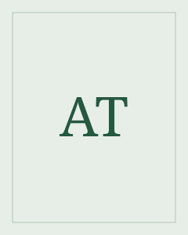

Anton Tšehov
Sanomatta jäävä voi muuttaa koko keskustelun.
Tšehov oli venäläinen kirjailija ja lääkäri. Hänen näytelmissään ja novelleissaan arkiset tilanteet avaavat ihmisten toiveita ja ristiriitoja.
Etsi teokset kirjastostaElämä ja teokset
Tšehov kirjoitti sekä novelleja että näytelmiä. Vanja-eno kuuluu hänen keskeisiin näytelmiinsä. Kirjastossa teokseen voi tutustua äänikirjana.
Tyyli ja teemat
Henkilöt puhuvat usein eri asioista kuin ajattelevat. Pieni huomautus, hiljaisuus tai aiheen vaihto voi paljastaa pitkään jatkuneen ristiriidan. Tunteet ja huumori mahtuvat samaan tilanteeseen ilman yhtä varmaa selitystä.
Kaipaus · Työ · Aika
Aloita tästä
Vanja-eno – äänikirja
Vanja-enon ja Sonjan arki kartanossa järkkyy professori Serebrjakovin ja Jelenan saapuessa. Kuunneltava näytelmä antaa tilaa henkilöiden eri äänille.
Kuuntele, kuka vastaa kysymykseen ja kuka vaihtaa puheenaihetta. Mitä nämä pienet siirtymät kertovat henkilöiden suhteista?